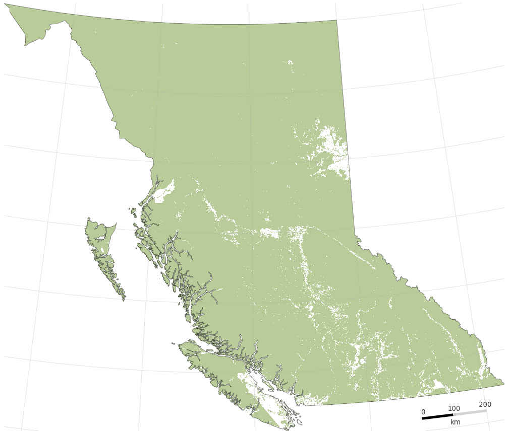

ProjectClimate Adaptive Planning for British Columbia (CAP-BC) is an online, open-access webtool to provide climate–adapted systematic conservation planning across BC. CAP-BC provides a means of adapting our conservation plans to the projected impacts of climate change, thereby ensuring that our protected lands are as resilient as possible moving forward and provide a tool to our partners that promotes the development of a network of protected areas in BC that is adaptive to future climate change |
 |